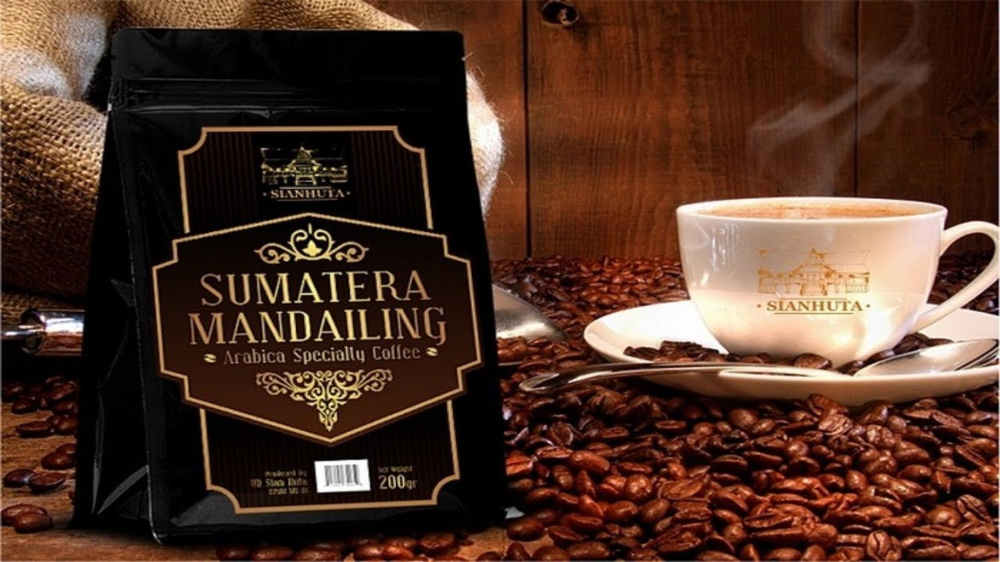
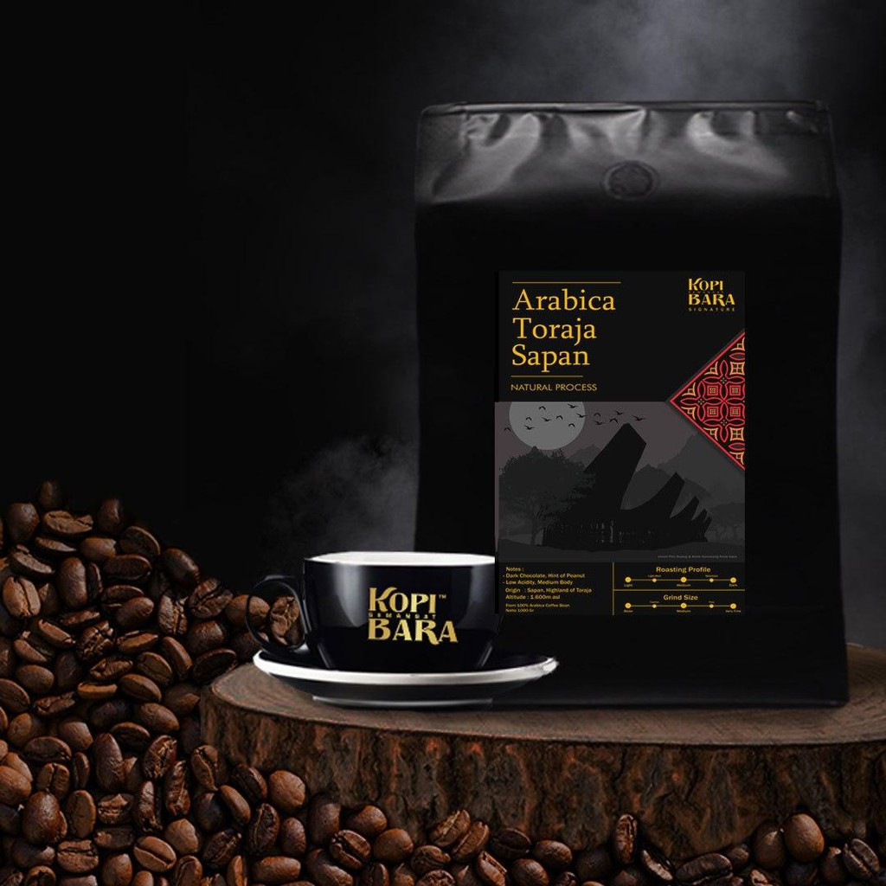

KOPI NUSANTARA
Jelajah Cita Rasa Kopi Indonesia
Kenali karakter tiga kopi arabika dari berbagai daerah di Indonesia, mulai dari aroma rempah hingga rasa earthy yang khas.
Kopi Gayo
Kopi arabika dengan aroma tajam, rasa rempah (spicy), dan keasaman yang rendah.

Kopi Mandailing
Kopi arabika berkarakter bold dengan tubuh yang tebal (full body), serta jejak rasa cokelat dan rempah.

Kopi Toraja
Dikenal juga sebagai Celebes Kalossi, memiliki perpaduan rasa earthy, tanah, dan rempah yang kompleks.
Pertanyaan Seputar Kopi Nusantara
Kopi Nusantara memperkenalkan Kopi Gayo, Kopi Mandailing, dan Kopi Toraja.
Kopi Gayo berasal dari Aceh. Kopi arabika ini memiliki aroma tajam, rasa rempah, dan keasaman yang rendah.
Kopi Mandailing dari Sumatera Utara memiliki karakter rasa kuat, tubuh yang tebal, serta jejak rasa cokelat dan rempah.
Kopi Toraja berasal dari Sulawesi Selatan dan memiliki perpaduan rasa earthy serta rempah yang kompleks.